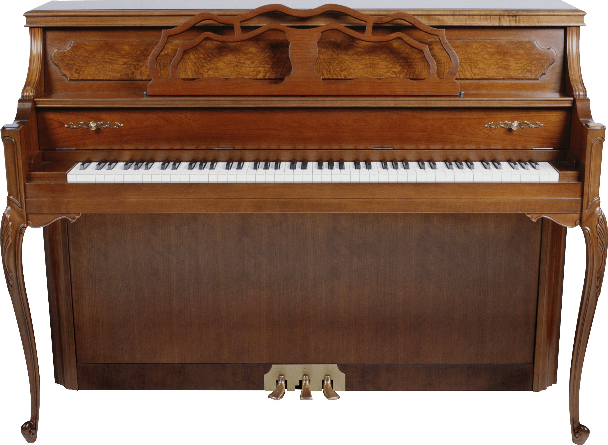

Piano Performance

I've been playing the piano for sixteen years! With that time I've covered the following genres:
- Classical
- Fur Elise - Beethoven
- Rondo Alla Turca - Mozart
- Tocata and Fugue in D Minor - Bach
- Movie Soundtracks
- Interstellar
- Star Wars
- Most Disney Movies
- Pop Culture
- Piano Man - Billy Joel
- Mii Channel Theme - Wii (Nintendo)
- Kahoot Theme Song - Kahoot.it
- Ragtime (My Personal Favorite)
- Maple Leaf Rag - Scott Joplin
- The Entertainer - Scott Joplin
- Pineapple Rag - Scott Joplin
- LDS Church Hymns
- Arranged over 60% of the Hymns into various versions and styles
- Created a new "Ragtime" subgenre with the Hymns
I love to play ragtime. Especially "Maple Leaf Rag" or "The Entertainer". Over the years, I've participated in various different competitions and have only received top marks for each performance.
Organ Performance

I've been playing the organ for seven years now! With that time, I've been able to play at the following venues:
- LDS Churches and Stake Centers across Utah
- St. George LDS Tabernacle
The organ is such a unique and incredibly difficult instrument to learn. Not only do you have to play mutliple keys together like the piano, but you're also playing different notes with your feet, all while trying to stay in time, and following the conductor. It is however, one of the most rewarding instruments to play when you get it correct and into your muscle memory.
Below is one of the hardest yet most fulfilling pieces to learn and perform on the organ:
The Influence of Rachmaninoff
Rachmaninoff was a very key and influencial pianist in his time, and still stands as a legend in music history. Below is a graph from Tableau that shows the influence he's had on the music industry.